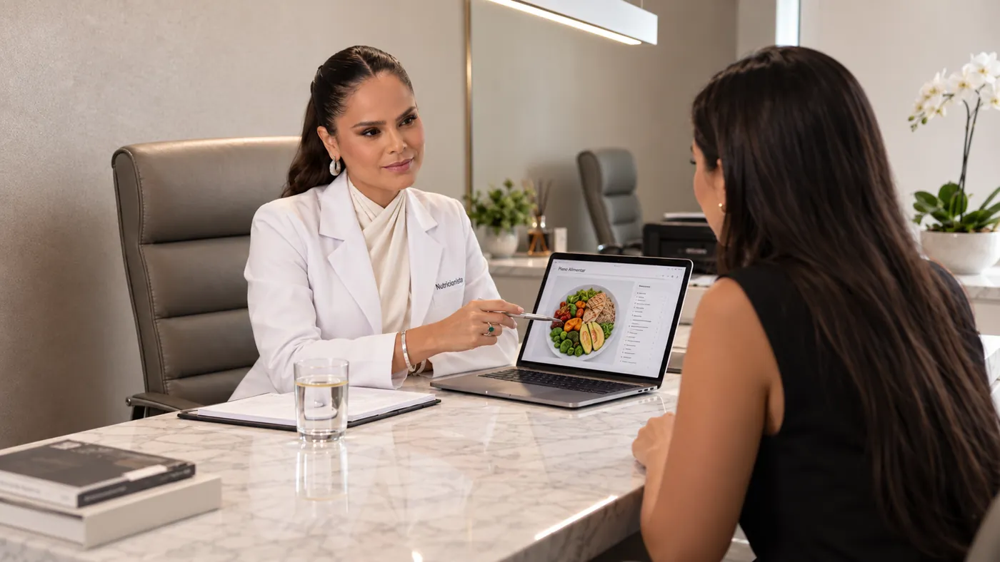

01
Nutrição clínica
Saúde, exames e rotina no mesmo plano. A conduta parte do que os seus resultados mostram, não do que está na moda.
- Exames laboratoriais
- Sintomas e histórico
- Ajuste contínuo